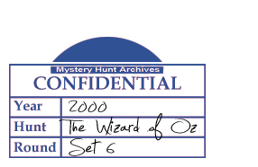

6.3 Quick Paws
The Cowardly Lion stayed safely in a lobby while Dorothy and the others explored, and since he had all that time to kill....
CO 192 sts
Rnds 1-4: k
Rnd 5: *k2tog, k10; rep from * to end of rnd (176 sts)
Rnds 6-8: k
Rnd 9: *k2tog, k9; rep from * to end of rnd (160 sts)
Rnds 10-12: k
Rnd 13: *k2tog, k8; rep from * to end of rnd (144 sts)
Rnds 14-16: k
Rnd 17: *k2tog, k7; rep from * to end of rnd (128 sts)
Rnds 18-20: k
Rnd 21: *p2tog, p6; rep from * to end of rnd (112 sts)
Rnds 22-24: p
Rnd 25: *k2tog, k5; rep from * to end of rnd (96 sts)
Rnds 26-28: k
Rnd 29: k2tog, k4, k2tog, k4, [p2tog, p4] 12 times, k2tog, k4, k2tog, k4 (80 sts)
Rnds 30-32: k10, p60, k10
Rnd 33: *k2tog, k3; rep from * to end of rnd (64 sts)
Rnds 34-36: k
Rnd 37: [p2tog, p2] 5 times; p1, k22, W&T, p21, W&T, k20, W&T, p19, W&T, k18, W&T, p17, W&T, k16, W&T, p20, W&T, [p2tog, p2] 11 times (48 sts)
Rnds 38-40: p
Rnd 41: [k2 tog, k1] 5 times; k2 tog, k14, k2tog; [k2tog, k1] 5 times (36 sts)
Rnd 42: k8, W&T, p16, W&T, k14, W&T, p 12, W&T, k6
Rnd 43: k10, k2tog, k12, k2tog, k10 (34 sts)
Rnd 44: k10, k2tog, k10, k2tog, k10 (32 sts)
Rnd 45: *k2 tog, rep from * to end (16 sts)
Rnd 46: k
Rnd 47: *k2tog, rep from * to end (8 sts)
Pass tail through remaining 8 sts